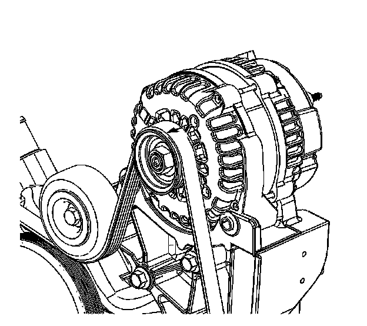
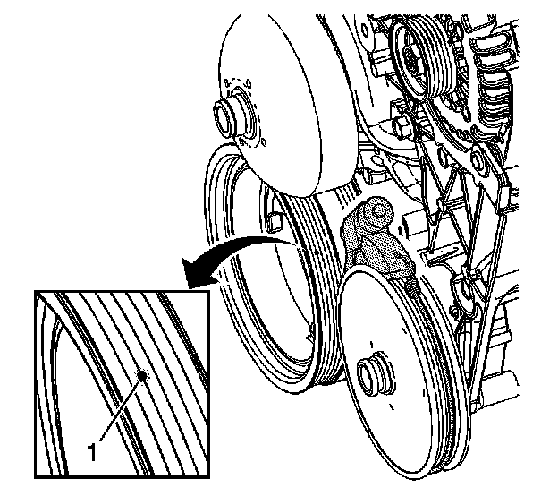

Engine - Drive Belt Misalignment Diagnostics
INFORMATIONBulletin No.: 08-06-01-008A
Date: July 27, 2009
Subject: Diagnosing Accessory Drive Belt / Serpentine Belt Noise and Availability and Use of Kent-Moore EN-49228 Laser Alignment Tool - Drive Belt
Models:
2010 and Prior GM Passenger Cars and Trucks (Including Saturn)
2010 and Prior HUMMER H2, H3 Vehicles
2009 and Prior Saab 9-7X
Supercede:
This bulletin is being revised to add a model year and update the Tool Information. Please discard Corporate Bulletin Number 08-06-01-008 (Section 06 - Engine).
Background
Several aftermarket companies offer laser alignment tools for accessory drive systems that can be very helpful in eliminating drive belt noise as a result of misaligned pulleys. Typically pricing ranges from $160 - $200.
EN-49228 Laser Alignment Tool - Drive Belt
The GM Tool program has now made available a competitive, simple to use and time-saving laser tool to assist in achieving precise alignment of the drive belt pulleys. This optional tool removes the guesswork from proper pulley alignment and may serve to reduce comebacks from:
- Drive Belt Noise
- Accelerated Drive Belt Wear
- Drive Belt Slippage
Instructions
The instructions below are specific only to the truck Gen IV V-8 family of engines. These instructions are only for illustrative purposes to show how the tool may be used. Universal instructions are included in the box with the Laser Alignment Tool - Drive Belt.
Caution
- Do not look directly into the beam projected from the laser.
- Use caution when shining the laser on highly polished or reflective surfaces. Laser safety glasses help reduce laser beam glare in many circumstances.
- Always use laser safety glasses when using the laser. Laser safety glasses are not designed to protect eyes from direct laser exposure.

1. Observe and mark the serpentine belt orientation.
2. Remove the serpentine belt from the accessory drive system.

3. Install the tool onto the power steering pulley. Position the legs of the tool into the outer grooves of the pulley, farthest from the front of the engine.
4. Install the retaining cord around the pulley and to the legs of the tool.

5. Put on the laser safety glasses provided with the tool.
6. Depress the switch on the rear of the tool to activate the light beam.
7. Rotate the power steering pulley as required to project the light beam onto the crankshaft balancer pulley grooves.
8. Inspect for proper power steering pulley alignment.
- If the laser beam projects onto the second rib or raised area (1), the pulleys are aligned properly.
- If the laser beam projects more than one-quarter rib 0.9 mm (0.035 in) mis-alignment, adjust the position of the power steering pulley as required.
- Refer to SI for Power Steering Pulley Removal and Installation procedures.
9. Install the serpentine belt to the accessory drive system in the original orientation.
10. Operate the vehicle and verify that the belt noise concern is no longer present.
Tool Information
Please visit the GM service tool website for pricing information or to place your order for this tool.

Disclaimer